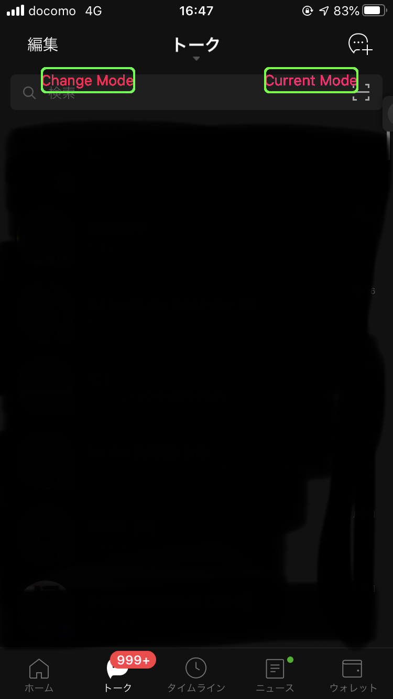
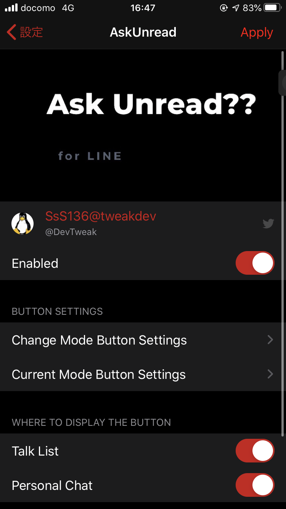
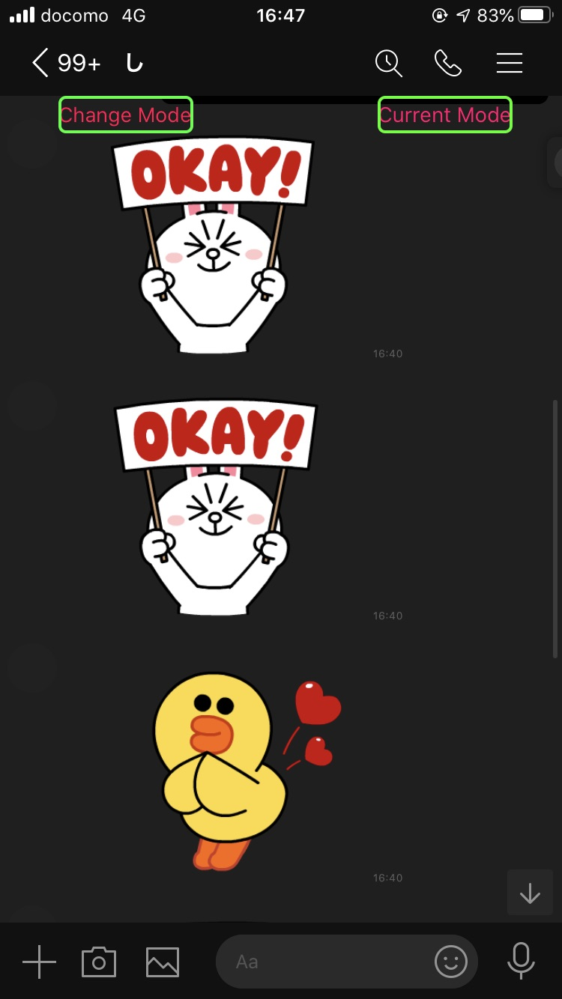

|
   |
•JAPANESE ↓↓↓ 機能 LINEの既読を無効にしたり有効にしたりが、その場でできるツールです。 各ボタンの大きさ、色、表示場所などは、設定にて変えることができます。 •各ボタンの説明 change modeは既読モード、未読モードの変更で、 current modeは現在のモードを表します。 •ENGLISH ↓↓↓ It is a tool that can disable or enable read of LINE on the The size, color, display location, etc. of each button can be changed in the settings. •Explanation of each button change mode is read mode, unread mode change, current mode indicates the current. |
| name | AskUnread? |
|---|---|
| ios versions | ios11~13 |
| version | 1.1 |
| Last Updated | April 8, 2020 |